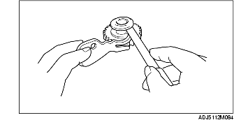
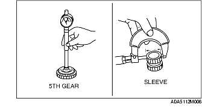

5th/reverse gear and housing parts inspection
5th and Reverse Gear Inspection
1. Inspect the synchronizer cones for wear.
2. Inspect the gear teeth for damage, wear, and cracks.
3. Inspect the synchronizer ring matching teeth for damage and wear.
Synchronizer Ring Inspection
1. Inspect the synchronizer ring teeth for damage, wear, and cracks.
2. Inspect the tapered surface for wear and cracks.
3. Measure the clearance between the synchronizer ring and the flank surface of the gear.

Clutch Hub Component Inspection
1. Inspect the clutch hub sleeve and hub operation.
2. Inspect the gear teeth for damage, wear, and cracks.
3. Inspect the synchronizer keys for damage, wear, and cracks.
4. Measure the clearance between the hub sleeve and shift fork.

Reverse Idle Gear and Reverse Lever Inspection
1. Inspect the gear teeth for damage, wear, and cracks.
2. Measure the clearance between the reverse idle gear bushing and the reverse lever.

5th Gear and Sleeve Inspection
1. Measure the clearance between the 5th gear and the sleeve.

- 5th gear inner diameter
- 34.01-34.03 mm {1.3390-1.3397 in}
- Sleeve outer diameter
- 33.94-33.97 mm {1.3363-1.3374 in}
- Standard clearance
- 0.04-0.09 mm {0.0016-0.0035 in}